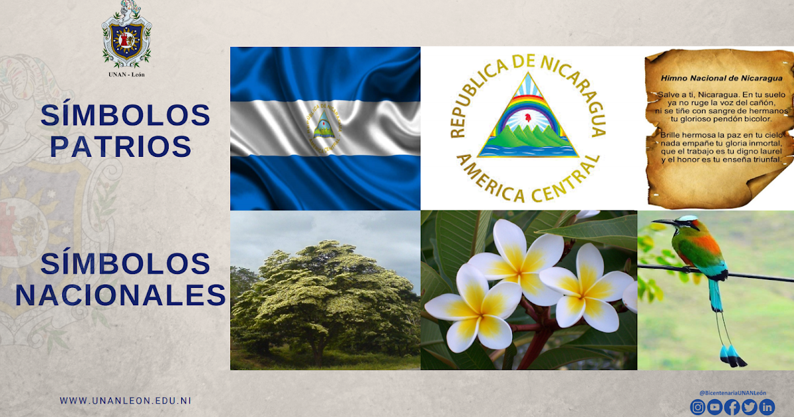
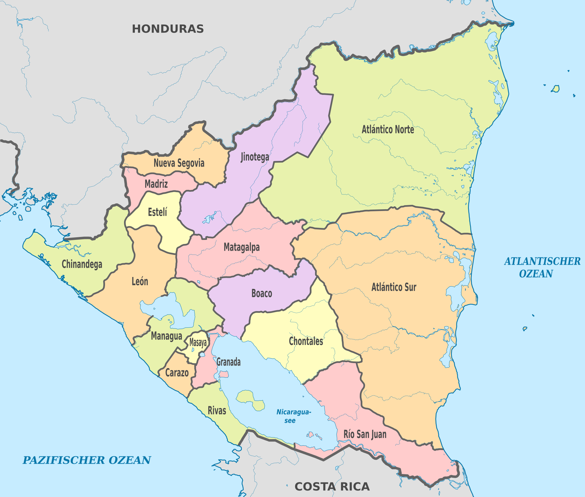

Nicaragua
Simbolos patrios

HISTORIA
Nicaragua, oficialmente llamado República de Nicaragua, es un país ubicado en Centroamérica. Su capital es la ciudad de Managua, aunque anteriormente era León. Está compuesta por quince departamentos y dos regiones autónomas: Costa Caribe Norte y Costa Caribe Sur. Se ubica en el hemisferio norte, entre la línea ecuatorial y el trópico de Cáncer, aproximadamente entre los 11° y los 15° de latitud Norte y respecto al meridiano de Greenwich, entre los 83° y los 88° de longitud Oeste. El territorio de Nicaragua tiene una superficie aproximada de 130 370 km²,1 constituyéndose con ello como el país más extenso de Centroamérica. Nicaragua cuenta con una población de 6 595 674 habitantes (2020). Limita al norte con Honduras, al sur con Costa Rica, al oeste con el océano Pacífico y al este con el mar Caribe. En cuanto a límites marítimos, en el océano Pacífico colinda con El Salvador, Honduras y Costa Rica; mientras que en el mar Caribe colinda con Honduras, Colombia y Costa Rica.6 Son reconocidas las lenguas de los pueblos indígenas originarios como el inglés criollo nicaragüense, misquito, sumu o sumo, garífuna y rama. Habitado por pueblos precolombinos, la costa del océano Pacífico y parte de la región central del actual territorio de Nicaragua fue conquistado por España en el siglo XVI, donde fue establecida la provincia de Nicaragua, que perteneció al Imperio español (1502-1821), luego al Primer Imperio Mexicano (1821-1823), a las Provincias Unidas del Centro de América (1823-1824), y a la República Federal de Centroamérica (1824-1838), emerge como país independiente en 1838, bajo el nombre de «Estado de Nicaragua»7 y se empieza a llamar República de Nicaragua, desde 1854.
Extensión territorial:
130 370 km²Lista de departamentos:
Lugares turísticos más importantes: